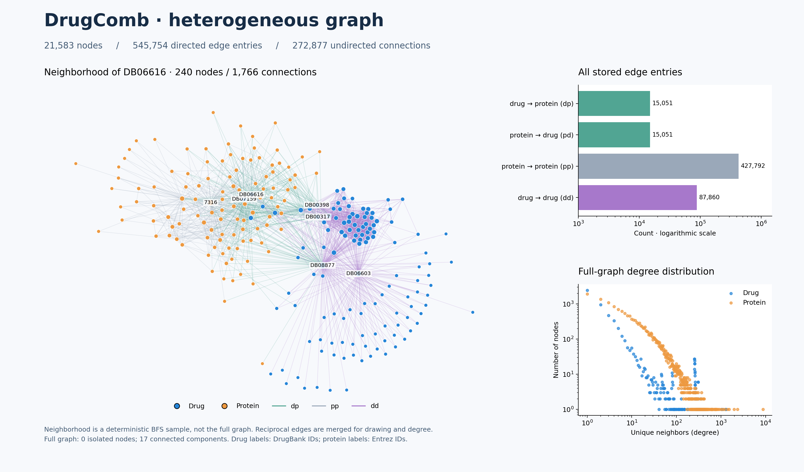

Experience
Experience & research
01 / 05 Experience
GEMS Lab
Research Intern
- Reimplemented MD-Syn in PyTorch without published code to reproduce baseline results for drug–drug synergy prediction, achieving 0.91 AUROC on DrugCombDB.
- Conducted ablation studies across 1D and 2D feature extraction modules, finding that 1D features accounted for approximately 99% of AUROC performance, while adding 2D features improved recall by 2.4 points.
- Implemented Tucker decomposition to generate drug–protein graph embeddings, improving AUROC by 0.02–0.07 over the identity-only baseline on in- and out-of-distribution drug splits.
